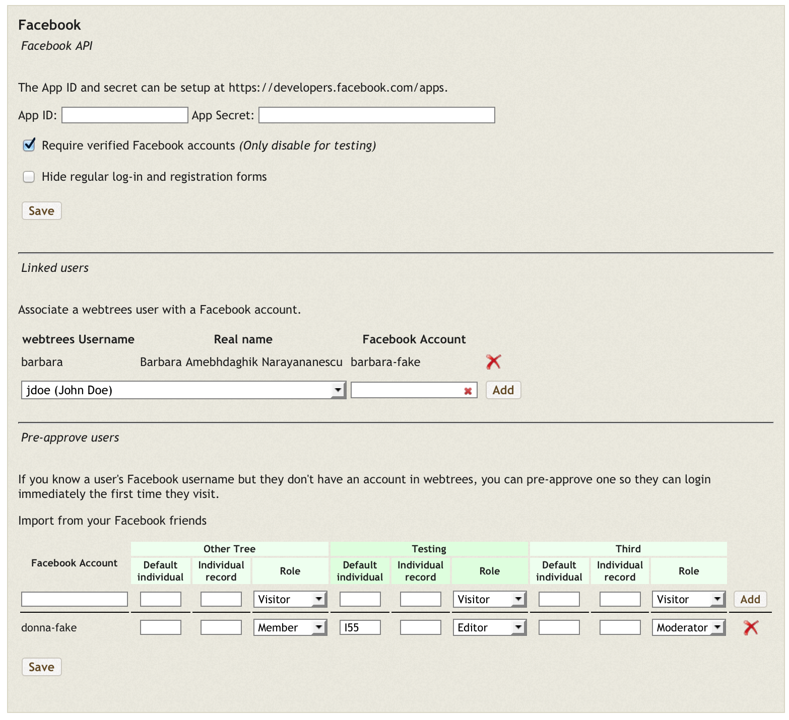
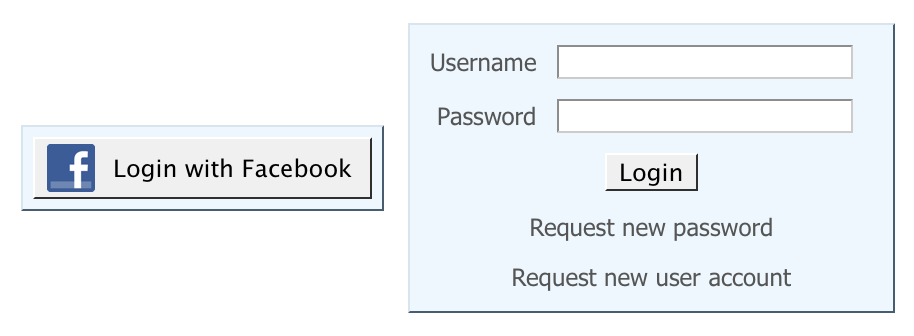

webtrees Facebook Module
Facebook integration for webtrees genealogy software.
All of the authentication is done on the server-side so no external JavaScript files are needed.
See how easy it is for a pre-approved Facebook account to login for the first time:
Screenshots
 Requirements
- webtrees 1.5.0 or higher is required.
- 'Allow visitors to request account registration' must be enabled in Site Configuration if you want to allow new users via Facebook.
Installation
- Install the module by extracting/cloning the directory with the name
facebookinside/modules_v3/. - In the 'administration' section of your webtrees site, visit the 'Modules' page and check the box to enable the 'Facebook' module and then click 'Save'.
- If you don't have a Facebook Developer account, create one at https://developers.facebook.com/.
- If you don't already have a Facebook application setup for the site, visit
https://developers.facebook.com/apps/ and set one up by clicking 'Create a New App' from the
Apps menu and specify a 'Display Name' and 'Category'.
- Once the App is created, click the 'Settings' menu and put your domain name (e.g. example.com) in the 'App Domains' field.
- Click 'Add platform', choose 'Website' and enter your 'Site URL' (e.g. http://example.com).
- Click 'Save Changes'.
- Specify the Facebook API App ID and Secret at
{WEBTREES_ROOT}/module.php?mod=facebook&mod_action=adminwhich is accessible as a 'Facebook' link from the bottom of the administration menu.
Known Issues
- If a user logs in with a Facebook account which uses a different email address than their existing webtrees email address, a second account will be created for the same individual. If administrator approval is required for new accounts, the administrator can delete the new account and link the existing account to the user's Facebook account. The administrator can also link existing users to their Facebook accounts in advance (where possible) to avoid this situation.
- There is no comment field during registration with a Facebook account.
- The login button will not appear if all trees have "Require visitor authentication".